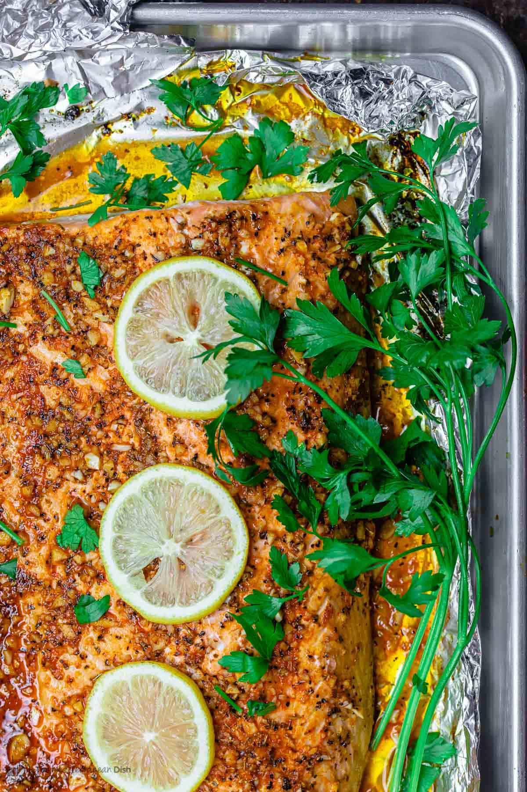

Home
Lemon Garlic Salmon Recipe

Description
If you’re looking for a quick, nutritious, and mouthwatering meal, look no further than baked lemon garlic
salmon. This dish is the epitome of easy elegance, combining fresh ingredients to create a flavor-packed meal
that’s perfect for any night of the week.
Ingredients
- 2 lb salmon fillet
- Kosher salt
- Extra virgin olive oil (I used Early
Harvest Greek extra virgin olive oil)
- 1/2 lemon, sliced into rounds
- Parsley for garnish
Steps
- Heat oven to 375 degrees F.
- Make the lemon-garlic sauce. In a small bowl or measuring cup, mix together the lemon juice, lemon zest,
extra virgin olive oil, garlic, oregano, paprika and black pepper. Give the sauce a good whisk.